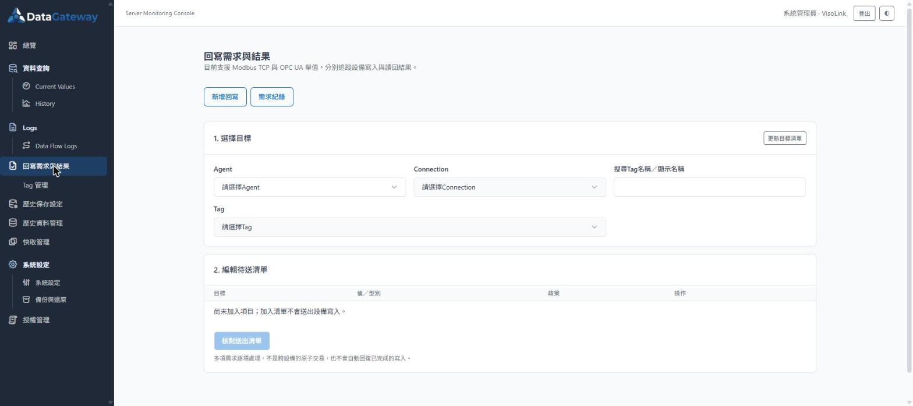
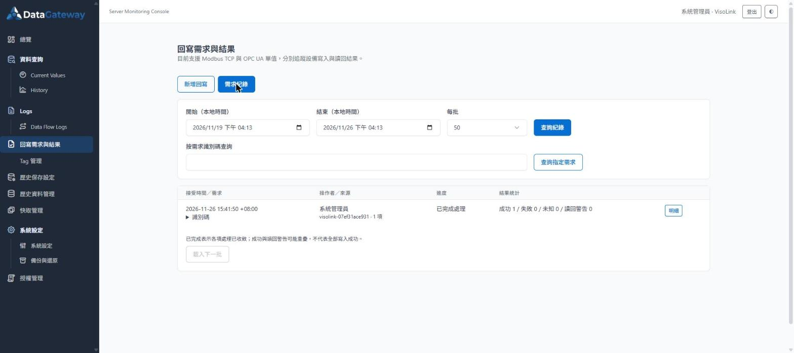

回寫需求與結果
DG 可直接對設備送出回寫，並查詢所有回寫需求（包含 VisoLink 送來的）的寫入與讀回結果。目前支援 Modbus TCP 與 OPC UA 單值。
能不能回寫由 Agent 決定：連線的「回寫」要開啟、Tag 要設為可寫並指定寫入安全規則（Agent 手冊第 7 章）。沒有符合的 Tag 時，這頁會顯示「目前沒有Agent回報可寫目標」。
新增回寫需求

- 在「1. 選擇目標」依序選 Agent、Connection，可用「搜尋Tag名稱／顯示名稱」縮小範圍，再選 Tag。選單會標示不能回寫的原因。
- 輸入要寫入的值，按「加入／更新待送清單」。
- 在「2. 編輯待送清單」核對目標、值／型別與政策，按「核對送出清單」。
- 出現「3. 確認送出」後逐項核對，勾選「我已核對每一項目標、值與政策限制」，按「確認並送出回寫需求」。
需求被接受並產生需求識別碼，畫面顯示每一項的處理結果。
多項需求逐項處理，不是跨設備的原子交易，也不會自動回復已完成的寫入。送出前請確認現場狀態。
失敗時先查
- Tag 選單沒有要的點：確認 Agent 連線已開啟回寫、該 Tag 為 ReadWrite 且指定了啟用中的寫入安全規則。
- 值被拒絕：超出寫入安全規則的最小／最大值，或還在 Cooldown 時間內。
查詢需求紀錄與結果

- 設定開始、結束時間與「每批」筆數，按「查詢紀錄」；已知識別碼時填入「按需求識別碼查詢」後按「查詢指定需求」。
- 在要看的需求按「明細」，下方顯示「需求結果」與每一項的寫入、讀回結果。
- 按「更新紀錄（只讀）」重新讀取；結果不明時按「向Agent查證原需求」。
可確認每一項是否寫入成功、設備讀回值是否相符。
「已完成」只表示各項處理都已結束；成功與讀回警告可能重疊，不代表全部寫入成功。查證只查詢既有需求，不會再寫一次設備。
失敗時先查
- 結果顯示未知：Agent 可能在寫入期間斷線，用「向Agent查證原需求」確認。